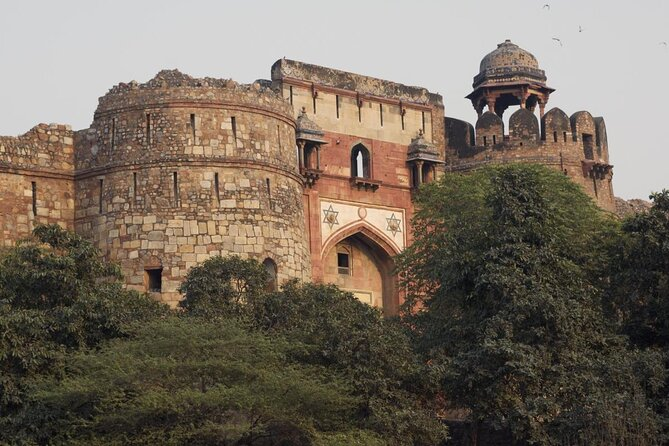

| Home | Amritsar | Jalandhar | Ludhiana |
|---|---|---|---|
| Welcome to Ludhiana | |||
History of LudhianaLudhiana city was founded in the time of Lodhi dynasty which ruled in Delhi from 1451-1526 A.D. The legend goes that two Lodhi Chief Yusaf Khan and Nihand Khan were deputed by Sikandar Lodhi (1489-1517 A.D.) to restore order in this region. They camped at the site of present city of Ludhiana which was then a village called Mir Hota. Yusaf Khan went across the river Sutlej in Jalandhar Doab to check Khokhars who were plundering the Doab and made a settlement at Sultanpur while Nihand Khan stayed back and founded the present city at the site of village Mir Hota. The new town was originally known as Lodhi-ana, which means the town of Lodhi’s. The name later changed to the present name Ludhiana.Ludhiana is now a District Headquarter with Parliamentary Constituency of the same name. It is one of the biggest Municipal Corporations of the State. |
|||
| Famous Places | |||
Maharaja Ranjit Singh War Museum |
Pavilion Mall |
Punjab Agricultural University |

Lodhi Fort (Purana Qila) |
| Created by Riya Arora ©2024 | |||